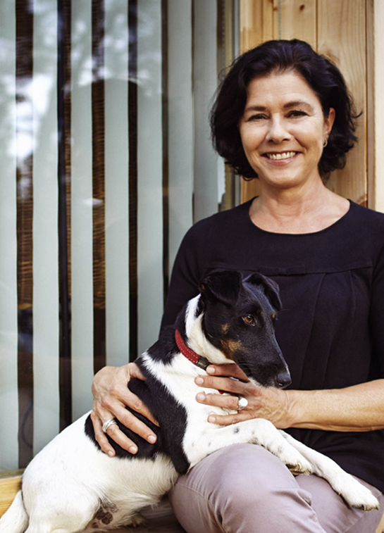

Pati Núñez es una diseñadora gráfica española especializada en diseño de branding y packaging.

Ganadora de varios premios Laus, en 2006 ganó el premio nacional de cultura de la Generalitat de Catalunya y en 2007 el Premio Nacional de Diseño por su aportación al mundo del diseño en sus 20 años de impecable trayectoria. Ha realizado proyectos para Cacao Sampaka, Loewe, Armand Basi, Mango, Opel, Caixa de Catalunya, Camper, Colegio de Arquitectos, Danone, Acosta, AD, Ayuntamiento de Barcelona, Aldeasa, American Prints, Anagrama Editorial, Antonio Miró, A Punto, Big Ben, Café de L’Acadèmia, Campos de Ibiza, Generalitat de Catalunya, Vinçon, Zas, Zebra, entre otros.